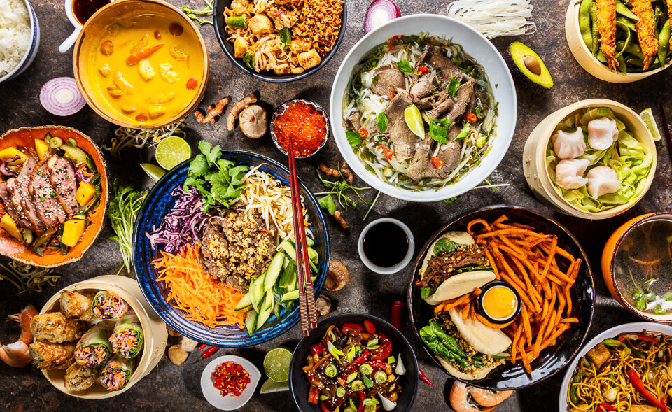

Welcome to Arnav's Recipe Site
Here the goal of this webpage is to share my culinary knowledge with others. As part of this, I will share recipes as well as my personal take on modern dishes that I have tried to cook over the past week. The culinary creations I experiment with span across multiple continents, each carrying rich traditions and fascinating stories of their origin that I can’t wait to share with you. I believe food is more than just nourishment—it is a way to connect with cultures, discover history, and bring people together around a shared table. Through this site, I hope to inspire others to try new flavors, explore global cuisines, and maybe even fall in love with cooking the way I have.
